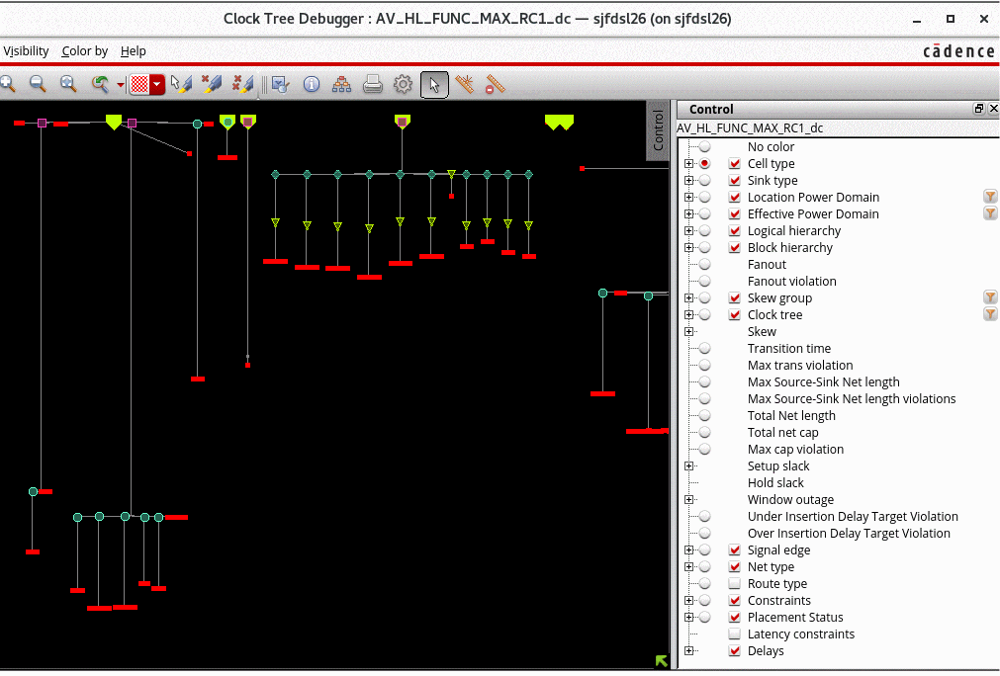
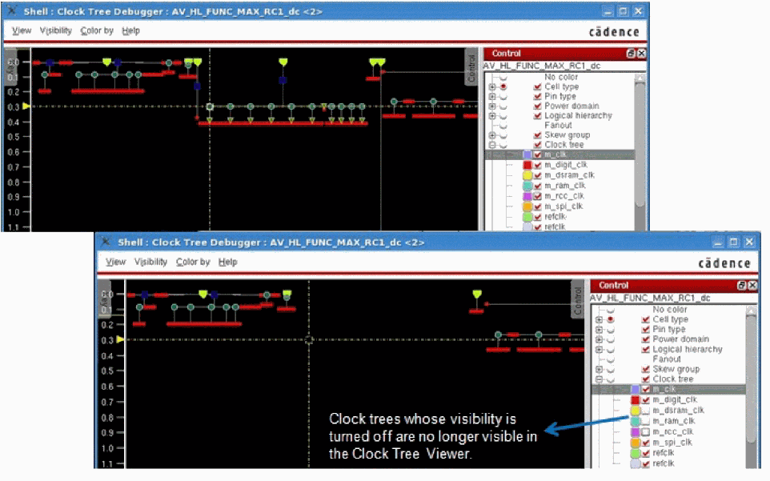
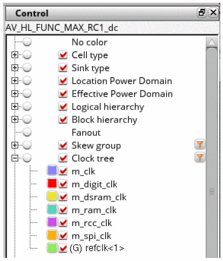
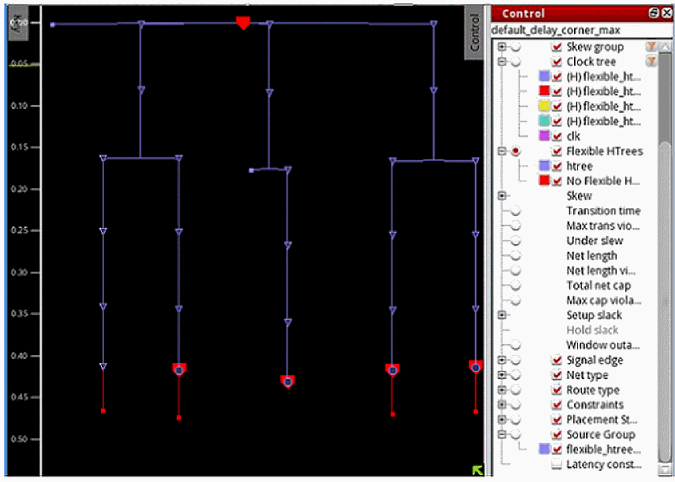
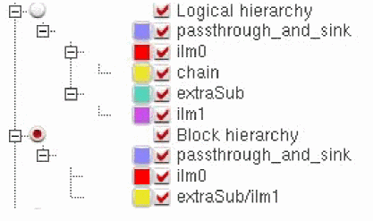

Control Panel of CTD
The Control panel displays and manages merged settings from the Visibility and Color by menus. It presents these items in a tree view that follows the same hierarchy as the two menus, with similarly named items combined. For example, the Cell type item includes both a radio button from the Color By menu and a submenu from the Visibility menu. In the Skew group submenu, individual items provide check boxes for both visibility and color.
To open the Control panel, choose View – Control panel. Alternatively, double-click Control in the upper-right corner of the CTD display.

The Control panel allows you to turn off the visibility of clock trees in the Clock Tree Viewer. For example, when you turn off the visibility of some trees in the control panel, the trees will no longer be shown in the Clock Tree Viewer. This is useful if you have many clock trees and the display window is very tight. You can choose to turn off the display of some trees using the Control panel.

The Control panel also allows you to identify generated clock trees easily. In the Control panel, a mark, (G), appears before the names of all generated clock trees. This helps users to identify the generated clock trees easily and saves them time when debugging clock trees. The image below shows a generated clock marked by (G) in the Control panel.

The Control panel lets you identify flexible H-trees when the design has flexible H-trees. In the Control panel, a mark, (H), appears before the names of all flexible H-trees. A new coloring is added to show things in flexible H-trees in different colors. This helps users to identify the H-trees trees easily and saves them time when debugging flexible H-trees. A source group coloring is added so that everything in the same clock tree source group can be colored together. The source group appears only when the design has source groups. The image below shows flexible H-trees marked by (H) in the Control panel.


The Block hierarchy option is used to color modules that represent ILM and other sub-blocks. For example, in the image above, you can see that there are four modules in the logical hierarchy but only two of these are ILM blocks, ilm0 and ilm1. The Block hierarchy option lists both these blocks. Also, in order to distinguish names, the hierarchical name of the ilm1 block (extraSub) is preserved in the listing.
Return to top